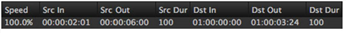

Modify
Using
Result
Src In
Slip Source
Adjusts the Src In and Src Out by the same amount, slipping the event while maintaining speed.
Before and after a 2 second Src In increase:


Src Out
Slip Source
Adjusts the Src Out and Src In by the same amount, slipping the event while maintaining speed.
Before and after a 2 second Src Out increase: